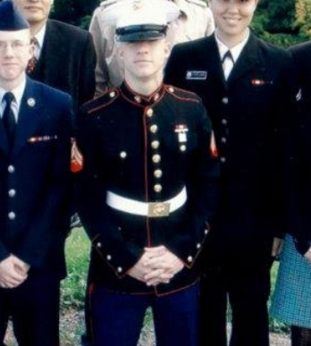
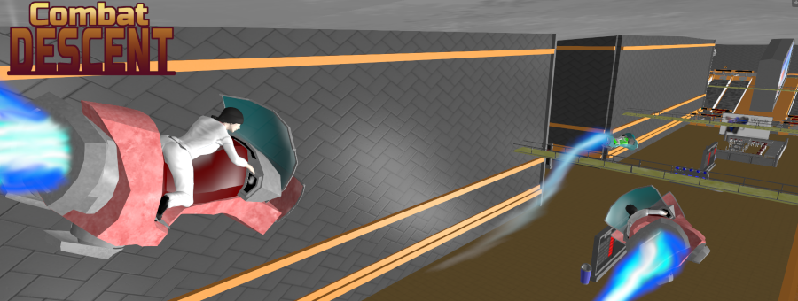
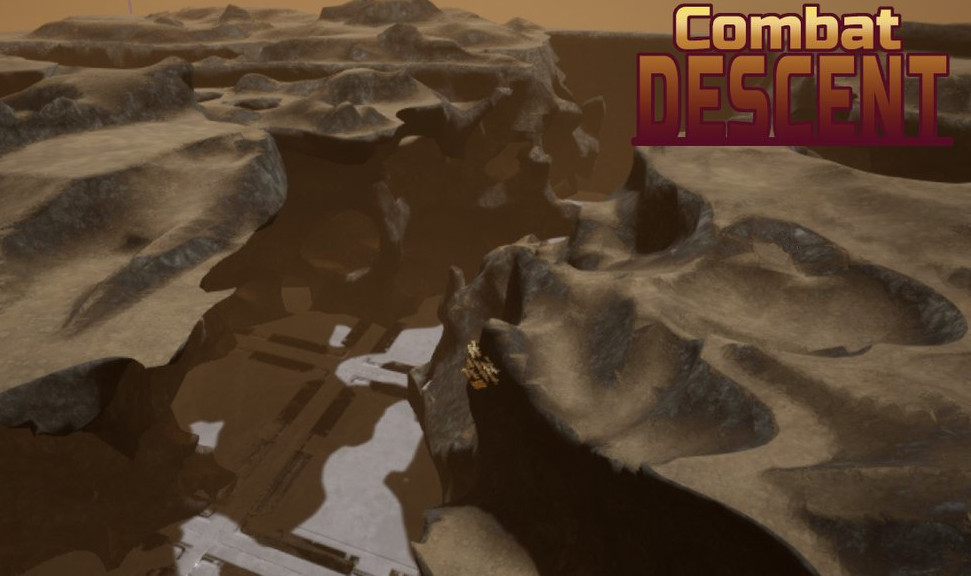
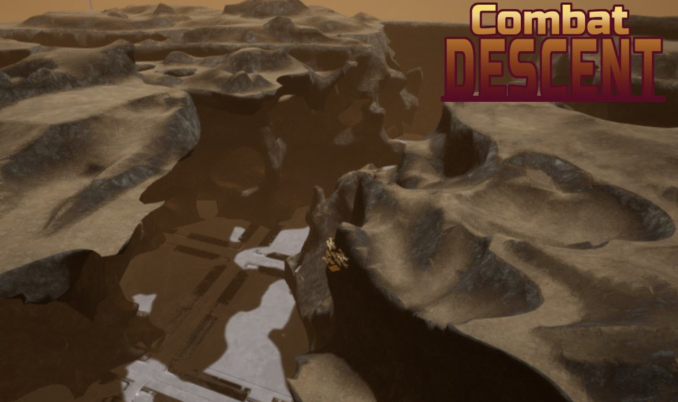
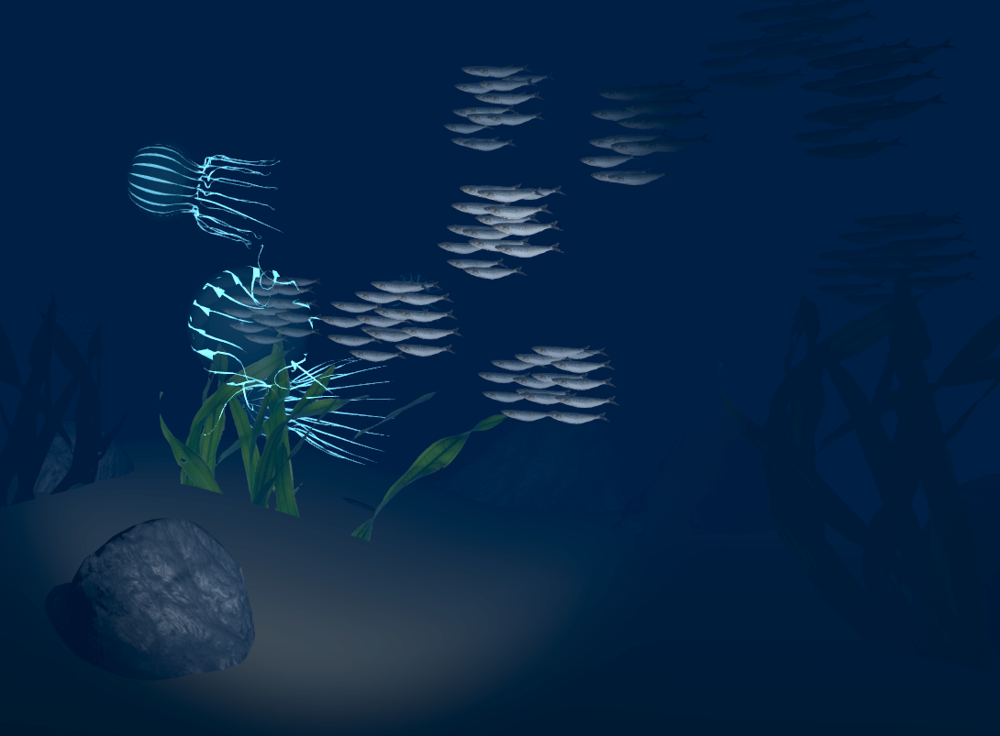
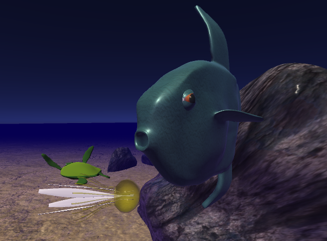
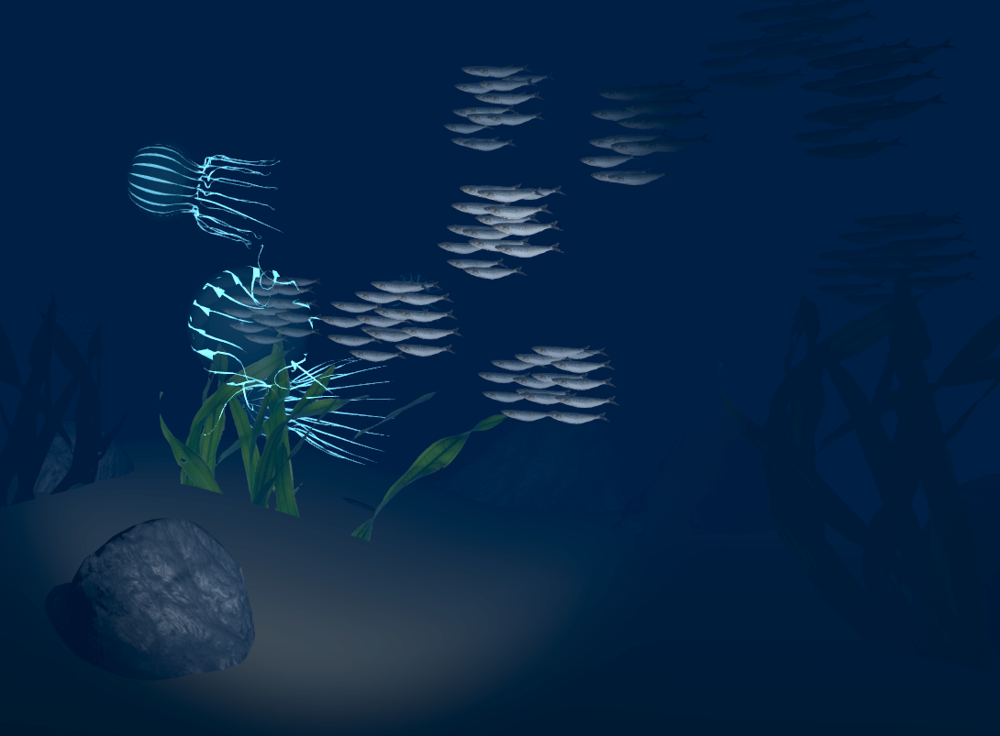
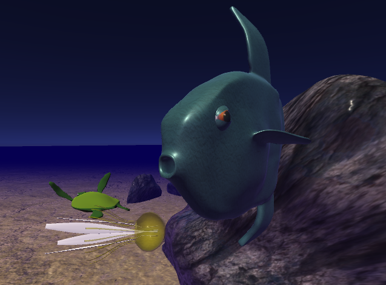
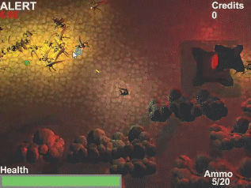
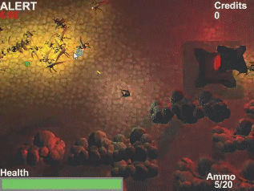

Mat is a Software Engineer and Technical Artist with 8 years experience in VR games and cloud enterprise applications.
He's a Marine Corps Intelligence veteran who takes initiative mentoring peers and solving technical challenges.
Cloud Enterprise Engineer
Frontend development in React and TypeScript.
Backend development in Java with Spring and SQL
VR/AR Engineer
Builds VR gaming and training experiences and autonomous application systems
Game Developer
Develops gameplay systems for VR, PC, and mobile using UE5, Unity,
C++, C#, Blueprints, and OpenGL
Artist and Animator
Models, rigs and animates 3D characters, props, and environments with Blender
Mat was raised in Modesto, California where he tinkered with game engines like ZZT and RPG Maker as a child. Throughout middle and high school, he taught himself
3D modeling and animation, game programming, and digital illustration.

Marine Corps
Mat enlisted in the US Marine Corps in 2007 and graduated from the Defense Language Institute, Foreign Language Center, Monterey Bay
as a Korean linguist. During his 5 years in the Marine Corps, Mat served as an intelligence operator and deployed alongside the FBI and Army, Navy, and Marine
Special Forces units to establish, maintain, and operating mission critical electronic equipment in rugged environments.
He completed his military term as a sergeant in 2012.
College
Following his military career, Mat attended the Academy of Art University in San Francisco, where he studied 3D Modeling, Animation, and Illustration before transferring
to CSU Monterey Bay. He graduated from CSUMB in 2018 with a BS in Computer Science and a concentration in Game Programming. During that time, Mat developed the Gauntlet VR travel technique
and published a paper about it at IEEE VR 2017, lectured about VR headsets and Leap Motion hand tracking, taught both high school students and college peers in
two different game development clubs, and developed three VR games: an educational game called Open Ocean VR, a horror game called Just One Night, and a game
called Scaleridge that adapted its difficulty based on EEG headset readings based on a PHD thesis about ADHD and presented a proof-of-concept in a paper published
at the 11th VS-Games International Conference.
Enterprise Software Engineer
Following college, Mat worked as a Software Engineer at Tapestry Solutions, a Boeing software company, where he worked for 3 years modernizing the ICODES Load Planner, a military and
commercial web app used to automate ship and warehouse loading. Mat also designed the Kafka messaging system used behind-the-scenes by Boeing ESI (Enterprise Sensor Intregration) to automate
facilities using various sensors and tags.

Indie Developer
During the military and college, Mat developed experimental games as a hobby, like Fleet and Combat Descent, and some other projects that released on the iOS App Store,
like Retro Remix and Attack Run Alpha. He honed his game development skills with practice projects and game jams until he started at HaptX in 2019.
VR Software Engineer
While briefly with HaptX in 2019 as a VR Software Developer, Mat created a demo used to review industrial CAD designs in virtual reality. Mat returned to HaptX in 2022 and created a VR experience aboard the
International Space Station. Next, Mat built 3 of the 4 levels for the G1 haptic glove demo, which won Best in Show at AWE 2024.
Besides VR engineering at HaptX, Mat administered hundreds of demos to investors and customers, including at ITSEC 2023, tested hundreds of alpha, beta, and production gloves, created new
software to validate glove hardware functionality, and lectured at a CalPoly university class about VR, haptics, and digital twins.
Family
Mat is married to his amazing wife of 9 years and they have a child and three cats.


 

 





 
